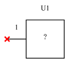
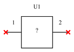
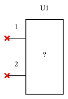
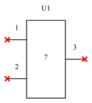
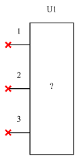
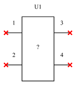
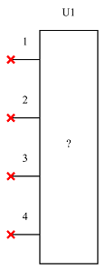

Unknown







| Property Name | Type | Keyword | Units | (Default) Value |
| default reference | string | U? | ||
| reference | string |
Unknown devices are only used in Deembedding↑ applications and are used to specify the devices whose s-parameters are unknown and are to be solved for.
See Unknowns↑ for more information on their use.
Unknowns are placed in the schematic using Add Unknown↑ or by using Add Part↑ and selecting Unknown↑ devices from the Unknowns category.

Unknown devices have only a reference designator which provides the name for the unknown, which will be the default name given for the unknown s-parameters calculated.